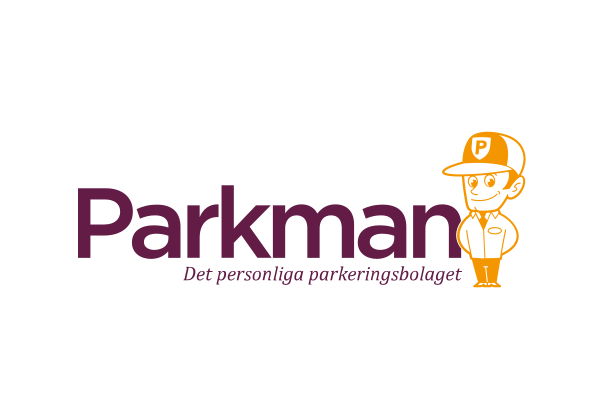

Skikkelig
garasje-IT
Hvordan lager man et system når man har 160 servere i garasjer rundt i Europa

Hvorfor?
Utfordring:
Båndbredde for bilder
❌
ANPR
Logikk for passeringer

Protobuf
message Result {
Plate plate = 1;
bytes image = 2;
Rect image_frame = 3;
Rect region_of_interest = 4;
Rect anpr_frame = 5;
bytes plate_image = 6;
}
message Rect {
int32 x = 1;
int32 y = 2;
int32 width = 3;
int32 height = 4;
}
Utfordring:
Skriv et GUI på to uker
class MainView : View("Autopay Onsite Gui") {
override val root = borderpane {
top = menubar {
menu("System") {
item("Exit") { exitGui()}
}
}
center = AllLanesView(model)
}
}
Utfordring:
Re-installere 120 servere
grub.cfg
menuentry "Install Autopay Onsite" {
set gfxpayload=keep
linux /install/vmlinuz file=/cdrom/graphical.seed quiet
initrd /install/initrd.gz
}Preseed
d-i preseed/early_command string sh /cdrom/early_command.sh
d-i preseed/late_command string sh /cdrom/bootstrap-autopay.shdebconf
db_progress START 0 12 autopay-bootstrap/progress
db_progress STEP 5
if [ "$FIRST_RUN" -eq 1 ]; then
db_fset autopay-bootstrap/hostname seen true
FIRST_RUN=0
else
db_fset autopay-bootstrap/hostname seen false
fi
db_fset autopay-bootstrap/otp_code seen false
db_input critical autopay-bootstrap/otp_code || true
db_input critical autopay-bootstrap/hostname
db_go || exitUtfordring:
Oppdater 160 servere samtidig
ansible-pull \
-d "/var/lib/ansible/local" \
-U "git@github.com:2Park/repo" \
-C "branch" \
--extra-vars "@/var/lib/ansible/extra_vars.yml" \
"ocr-server.yml"
<plugin>
<artifactId>jdeb</artifactId>
<groupId>org.vafer</groupId>
<executions>
<execution>
<phase>package</phase>
<goals>
<goal>jdeb</goal>
</goals>
<configuration>
<dataSet>
<data>
<type>file</type>
<src>${project.build.directory}/${project.build.finalName}-allinone.jar</src>
<dst>/opt/autopay-onsite-gui/bin/autopay-onsite-gui.jar</dst>
</data>
<data>
<type>file</type>
<src>${project.basedir}/src/deb/autopay-onsite-gui.desktop</src>
<dst>/usr/share/applications/autopay-onsite-gui.desktop</dst>
</data>
</dataSet>
</configuration>
</execution>
</executions>
</plugin>
- name: Set up artifactory as apt source
template:
src: autopay.list.j2
dest: /etc/apt/sources.list.d/autopay.list
- name: Add GPG key for artifactory
copy:
src: autopay.gpg
dest: /etc/apt/trusted.gpg.d/autopay.gpg
- name: Install Autopay ANPR
apt:
name: "autopay-anpr{{ anpr_version }}"
- name: Install Autopay Parking Controller
apt:
name: "autopay-parking-controller{{ pc_version }}"
Utfordring:
Serverene har ikke public IP
/usr/bin/autossh -M 0 \
-o "StrictHostKeyChecking no" \
-o "ExitOnForwardFailure yes" \
-o "ServerAliveInterval 30" \
-o "ServerAliveCountMax 3" \
-N -T \
-R "8000:localhost:22" \
-i "file.key"
"admin@host"Hva med autentisering
(Open)SSH certificates
# Create certificate
ssh-keygen -f server_ca
# Sign certificate
ssh-keygen -s server_ca -I "Stian_Mathiassen" \
-V +10w ~/.ssh/id_rsa.pub.ssh/authorized_keys
cert-authority ssh-rsa AAAAB...== 2Park CAknown_hosts
The authenticity of host 'host (8.8.8.8)' can't be established.
ECDSA key fingerprint is SHA256:AAAAAAAAAAAAAAAAAAAAAAAAAAAAAAAcmoX+436BAPc.
Are you sure you want to continue connecting (yes/no)?Utfordring:
Hvordan vet man et det fungerer?
[[inputs.cpu]]
percpu = true
totalcpu = true
[[inputs.disk]]
ignore_fs = ["tmpfs", "devtmpfs", "devfs"]
[[inputs.diskio]]
# No config needed :D
[[inputs.statsd]]
protocol = "udp"
service_address = ":8125"
[[outputs.influxdb]]
urls = ["https://asdf.influxcloud.net:8086"]
database = "twopark_no"
write_consistency = "any"
username = "twopark_no"
password = "abcd"Telegraf
[[inputs.tail]]
files = ["/var/log/telegraf/send_to_influxdb.log"]
data_format = "influx"send_to_influxdb.log
upgrade_events,package=autopay-parking-controller text="Upgrading autopay-parking-controller to 1.2.1213",old_version="1.2.1208",new_version="1.2.1213"
upgrade_events,package=autopay-anpr text="Upgrading autopay-anpr to 1.2.431",old_version="1.2.426",new_version="1.2.431"Kapacitor
var data = stream
|from()
.measurement('anpr_camera_frame_count')
.database('twopark_no')
.groupBy(['camera-id', 'server'])
|window()
.period(120s)
|mean('value').as('value')
|stateDuration(lambda: "value" <= 5)
.unit(1m)
.as('state_duration')
var trigger = data
|alert()
.crit(lambda: "state_duration" >= 20)
.slack()
.channel(slack_channel)